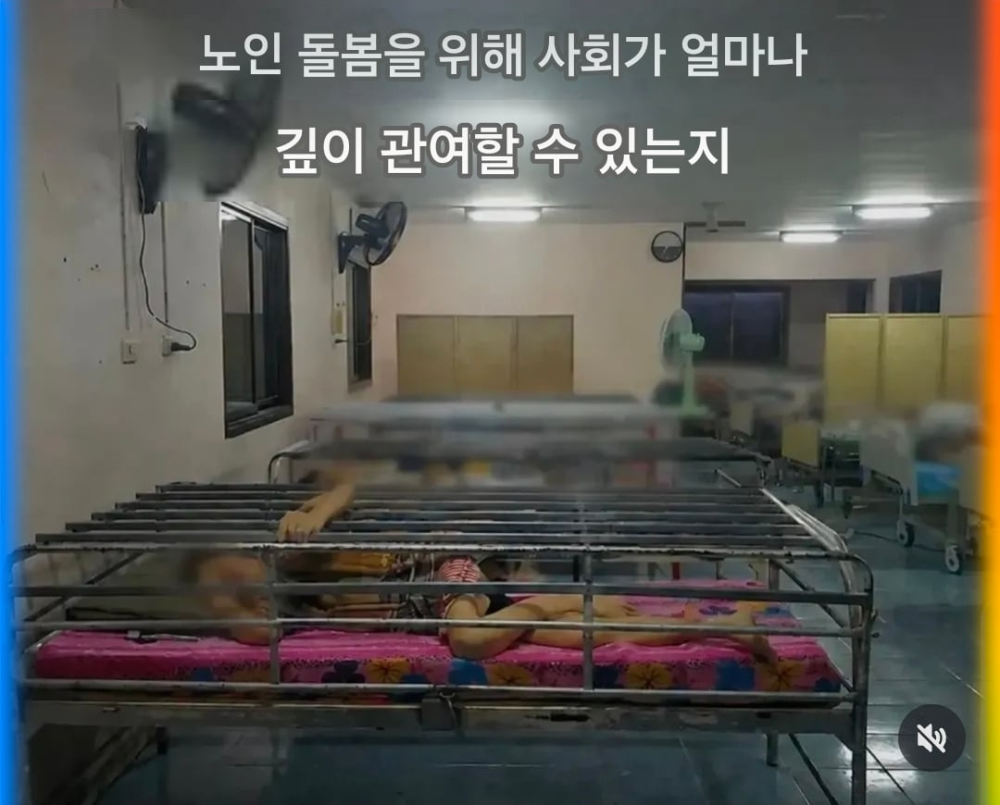
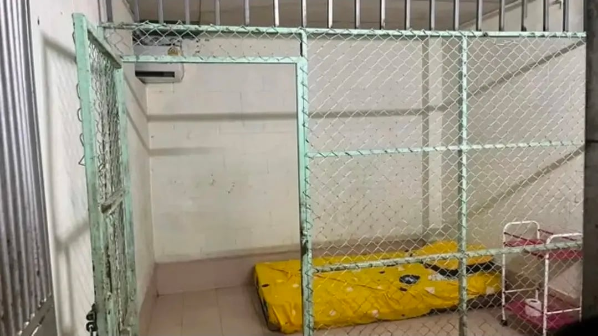
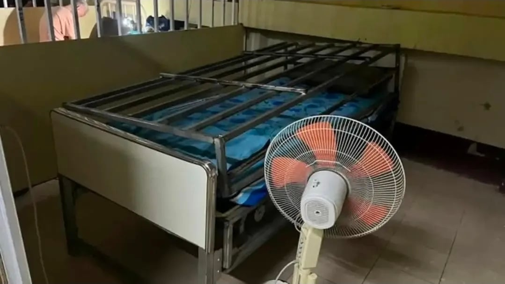

태국 뉴스, 칸차나부리의 '노인 요양원'으로 위장한 동물 우리 같은 시설
관련 당국의 공식 승인을 받은 칸차나부리의 한 노인 및 정신과 치료 시설이 학대 의혹 제기 후 태국 중앙수사국(CIB)의 조사를 받았습니다.
시설 내부에서는 92명의 노인들이 침대 주변에 금속 막대가 설치되어 있고 자물쇠로 잠긴 우리 구조물까지 있는 감옥 과 같은 환경에서 생활하는 것이 발견되었습니다.
라네 친구들한테 물어보니까 저런곳이 종종 뉴스에 나온다던데
부모 재산 뺏으려고 입원시키기도 한다는 얘기도 있다고...
정신과 치료시설이라니, 사실상 치매환자 가둬두는 우리같네